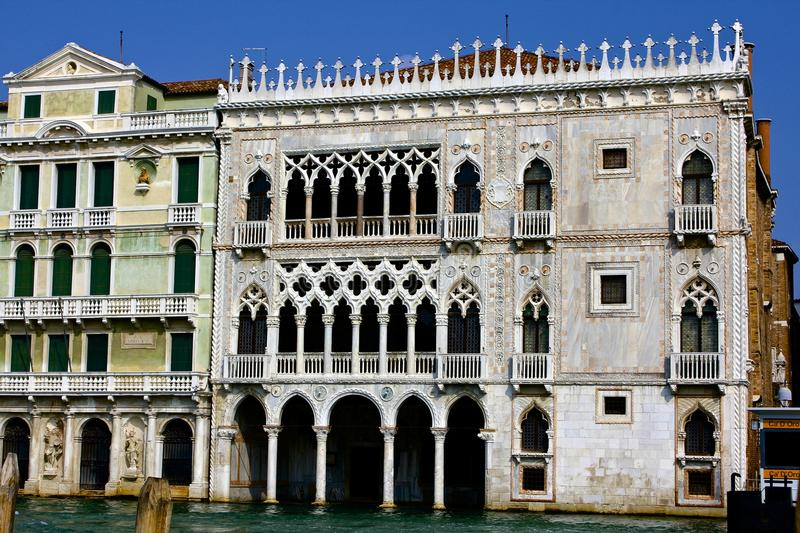

.jpg)
La torre de Pisa o torre inclinada de Pisa es la torre campanario de la catedral de Pisa, situada en la plaza del Duomo de Pisa, en la ciudad del mismo nombre, municipio de la región italiana de la Toscana y capital de la provincia homónima de Italia.
.jpg)
El Gran Canal es el mayor canal de la ciudad de Venecia, la mayor zona húmeda de este país gracias a los múltiples canales de distinta longitud y anchura que lo riegan, en Italia. Este recorre Venecia trazando una S y le sigue en tamaño e importancia el canal Regio o Cannaregio.
.jpg)
.jpg)
.jpg)
.jpg)
El Coliseo o Anfiteatro Flavio es un anfiteatro de la época del Imperio romano, construido en el siglo I. Está ubicado en el este del Foro Romano, y fue el más grande de los que se construyeron en el Imperio romano.
.jpg)
El Panteón de Agripa o Panteón de Roma es un antiguo templo romano —en la actualidad una iglesia—, situado en la ciudad de Roma, en el lugar de un anterior templo encargado por Marco Agripa durante el gobierno de Augusto. Fue terminado por orden del emperador Adriano y dedicado alrededor del año 126.
.jpg)
La catedral de Milán es una catedral gótica emplazada en la ciudad homónima. Es la sede episcopal de la Archidiócesis de Milán. Es una de las iglesias de culto católico más grandes del mundo, tiene 157 metros de largo pudiendo albergar hasta 40,000 personas en su interior.
La basílica catedral metropolitana de Santa Maria del Fiore, o catedral de Santa María de la Flor, es la sede episcopal de la arquidiócesis de Florencia, Italia. Es una de las obras maestras del arte gótico y del primer Renacimiento italiano.
La Capilla Sixtina es una capilla del Palacio Apostólico de la Ciudad del Vaticano, la residencia oficial del papa. Se trata de la estancia más conocida del conjunto palaciego. Originalmente servía como capilla de la fortaleza vaticana.
El campanario o campanile de Giotto es la torre campanario de la iglesia Santa María del Fiore, catedral de Florencia, situada en la plaza del Duomo.

La Ca' d'Oro es un notable edificio de Venecia, situado en el sestiere de Cannaregio, junto al Gran Canal. Actualmente es sede del museo de arte "Giorgio Franchetti".
.jpg)
El Palazzo Reale o Palacio Real de Milán fue por muchos siglos sede del gobierno de la ciudad de Milán, residencia de regentes y es actualmente un importante centro cultural, sede de muestras y exposiciones.